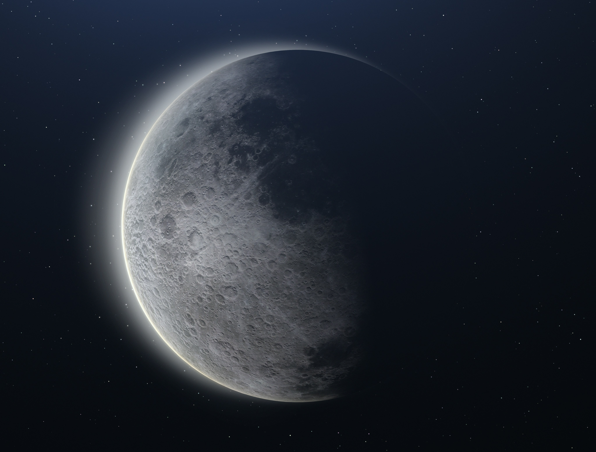
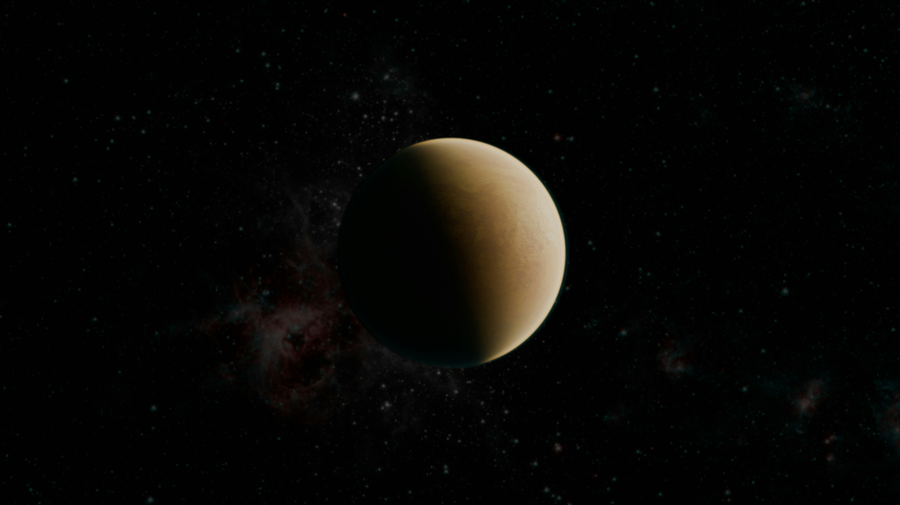
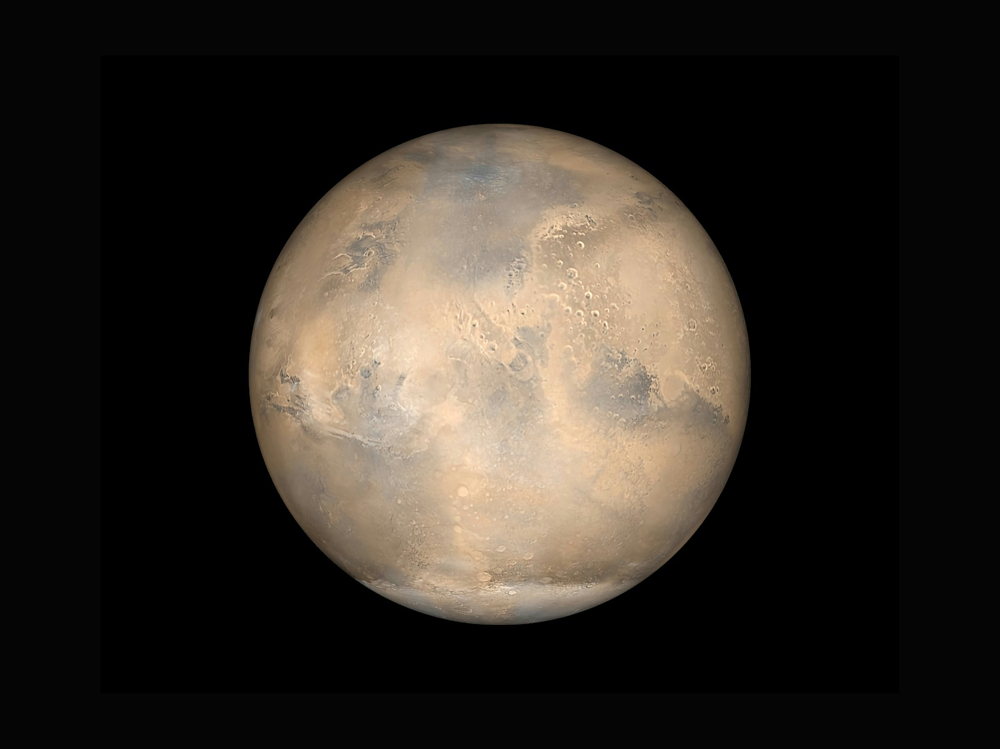
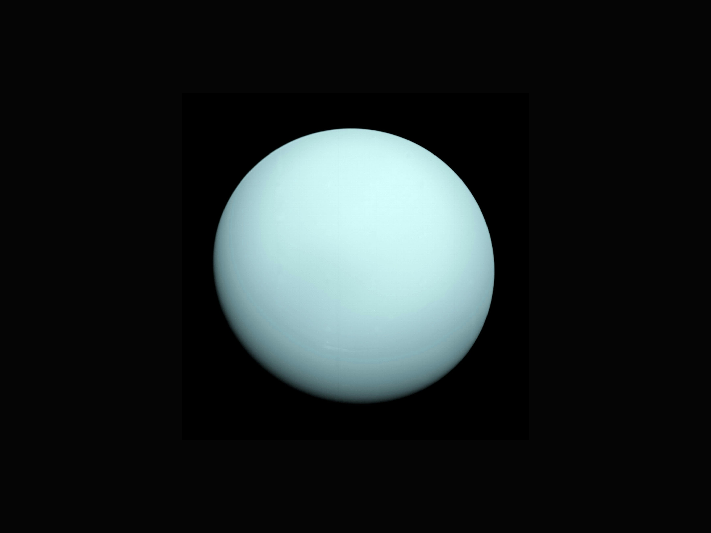

The Sun

Sun – The Heart of the Solar System ☀️
🌞 The Sun is a huge ball of hot gases located at the centre of our Solar System. It is a star and the largest object in our Solar System. It provides heat and light to all the planets. The Sun is mainly made up of hydrogen and helium. 🔥 Its energy is produced through a process called nuclear fusion. Its gravity keeps all the planets revolving around it. The Sun is approximately 150 million kilometres away from Earth. It takes about 8 minutes and 20 seconds for sunlight to reach Earth. The Sun is approximately 4.6 billion years old. Its surface temperature is about 5,500°C. 🌍 It is essential for life on Earth, as it provides warmth and energy. 🚀
Learn More About The Sun
The Mercury

Mercury – The Swiftest Planet ☿️
☀️ Mercury is the smallest planet in our Solar System and the closest planet to the Sun. It is the first planet from the Sun. Mercury is a rocky planet with a surface covered in numerous craters. It takes only 88 Earth days to complete one revolution around the Sun. Mercury has no natural moons or rings. 🌑 It has almost no atmosphere to retain heat. Its temperatures are extremely high during the day and very low at night. Mercury is the fastest planet in the Solar System. Despite being closest to the Sun, it is not the hottest planet. It has a very thin exosphere surrounding it. 🚀 Mercury is named after the Roman messenger god.✨
Learn More About The Mercury
The Venus

Venus – The Hottest Planet 🌕
🌟 Venus is the second planet from the Sun and is often called Earth's sister planet because of its similar size. It is the hottest planet in our Solar System. Venus has a thick atmosphere mainly made up of carbon dioxide. Its thick atmosphere traps heat, creating an extreme greenhouse effect. 🔥 Venus has a rocky surface with mountains, valleys and volcanoes. It rotates very slowly and in the opposite direction to most planets. A day on Venus is longer than its year. Venus has no natural moons or rings. It is one of the brightest objects visible in our night sky. ✨ Its thick clouds are mainly made of sulphuric acid. Venus takes about 225 Earth days to complete one revolution around the Sun. 🚀
Learn More About The Venus
The Earth

Earth – The Blue Planet 🌍
🌎 Earth is the third planet from the Sun and the only known planet to support life. It is often called the Blue Planet because most of its surface is covered with water. About 71% of Earth's surface consists of oceans and seas. Earth has a suitable atmosphere containing oxygen, nitrogen and other gases. It provides the right conditions for plants, animals and humans to survive. 🌱 Earth has one natural satellite called the Moon. 🌙 It takes approximately 365 days to complete one revolution around the Sun. It rotates on its axis once every 24 hours, causing day and night. Earth has seven continents and five oceans. It has a protective magnetic field that helps shield it from harmful solar particles. 🌞 Earth is the fifth-largest planet in our Solar System. It is also the only planet known to have liquid water on its surface. 🚀
The Earth
The Mars

Mars – The Red Planet 🔴
🚀 Mars is the fourth planet from the Sun and is known as the Red Planet because of its reddish appearance. Its red colour comes from iron oxide, commonly known as rust, on its surface. Mars is a rocky planet with mountains, valleys and large craters. It has a thin atmosphere mainly made up of carbon dioxide. Mars has two small natural moons named Phobos and Deimos. 🌑 It is much colder than Earth because it is farther from the Sun. Mars takes about 687 Earth days to complete one revolution around the Sun. It has the largest volcano in the Solar System, called Olympus Mons. 🌋 Scientists believe that liquid water once flowed on its surface. Mars is one of the most explored planets by space missions. Scientists are studying it to understand whether it could have supported life in the past. 🌌
Learn More About The Mars
The Jupiter

Jupiter – The King of Planets 🪐
🌌 Jupiter is the fifth planet from the Sun and the largest planet in our Solar System. It is a gas giant mainly made up of hydrogen and helium. Jupiter is famous for its Great Red Spot, a giant storm that has been raging for centuries. 🔴 It has a very strong magnetic field and many natural moons. Jupiter has faint rings made of dust particles. It takes about 11.86 Earth years to complete one revolution around the Sun. Jupiter rotates very quickly and completes one rotation in about 10 hours. Its atmosphere contains colourful bands of clouds. 🌪️ Ganymede, one of its moons, is the largest moon in the Solar System. Jupiter's strong gravity helps influence the movement of many objects in the Solar System. 🚀 It is often called the King of Planets because of its enormous size.
Learn More About The Jupiter
The Saturn

Saturn – The Ringed Planet 🪐
🌌 Saturn is the sixth planet from the Sun and the second-largest planet in our Solar System. It is a gas giant mainly made up of hydrogen and helium. Saturn is famous for its beautiful and magnificent rings. 💫 These rings are made of countless pieces of ice, rock and dust. Saturn has a large number of natural moons. Its largest moon is called Titan. 🌕 Saturn takes about 29.5 Earth years to complete one revolution around the Sun. It rotates very quickly and completes one rotation in about 10.7 hours. Saturn is so light for its size that its average density is lower than that of water. It has a pale yellow appearance because of the gases in its atmosphere. Saturn experiences strong winds and huge storms. 🌪️ It is one of the most beautiful planets in our Solar System. 🚀
Learn More About The Saturn
The Uranus

Uranus – The Sideways Planet
🌌 Uranus is the seventh planet from the Sun and the third-largest planet in our Solar System. It is an ice giant mainly made up of hydrogen, helium and other icy materials. Uranus is famous for its beautiful blue-green colour, which comes from methane gas in its atmosphere. It has a very cold atmosphere and is one of the coldest planets in the Solar System. Uranus rotates on its side, making it very different from other planets. It has 13 known rings made of dark particles. 💫 Uranus has 28 known moons, named after characters from the works of William Shakespeare and Alexander Pope. Its largest moon is called Titania. Uranus takes about 84 Earth years to complete one revolution around the Sun. It has extremely strong winds and unusual seasons. 🌪️ It was discovered by William Herschel in 1781. 🚀
Learn More About The Uranus
The Neptune